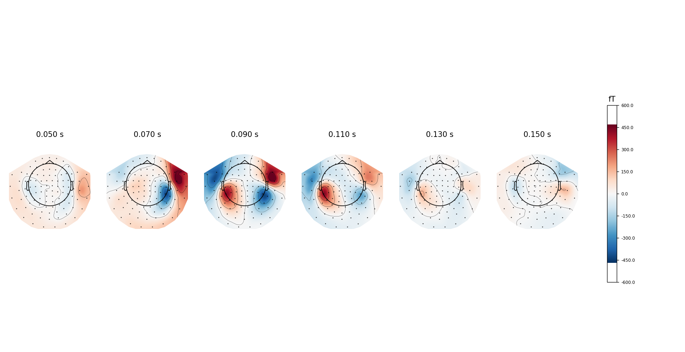

MNE_tutorial_EEG_MEG_processing
- MNE_tutorial_EEG_MEG_processing()[source]
Neural data preprocessing and visualization using MNE library. ! It is a MNE tutorial!
Plot the raw data
Perform ICA
Check for artifact
The following figure show example of artifacts
Compare the raw data before and after removing artifact
Compute EFR and ERP
Analyse Time frequency response

Analyse Topography
